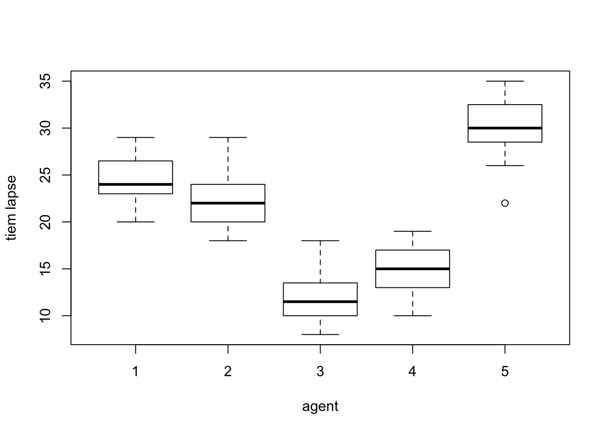
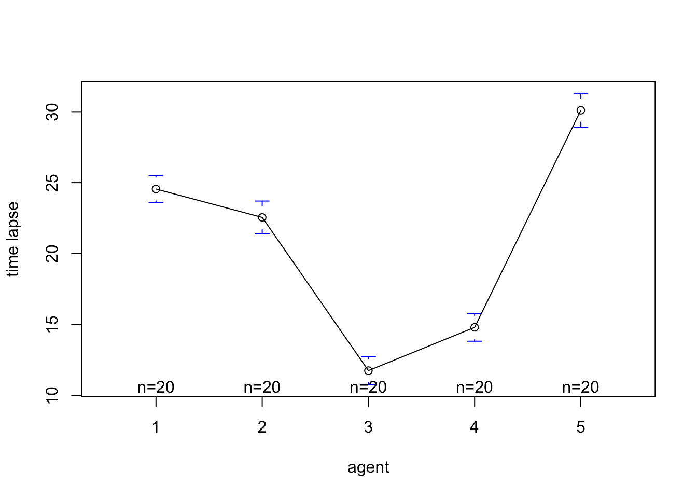
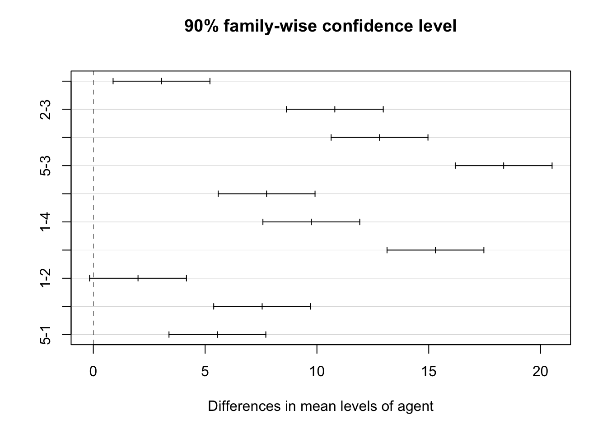
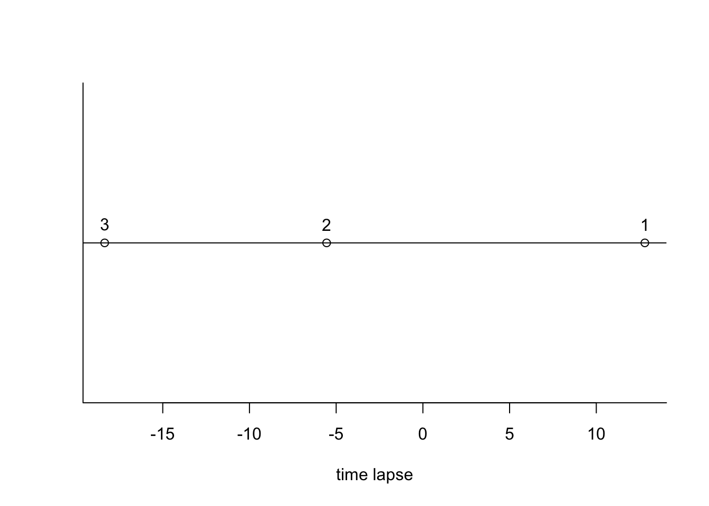

library(plyr)
library(gplots)
library(asbio)data1612 <- read.table("./data/CH16PR12.txt")[,1:2]
colnames(data1612) = c("time_lapse", "agent")boxplot(time_lapse~agent, data=data1612, xlab="agent", ylab="tiem lapse")
data1612$agent = as.factor(data1612$agent)
aov.fit = aov(time_lapse~agent, data = data1612)
fitted_value = ddply(data1612, .(agent), summarize, mean=mean(time_lapse))
colnames(fitted_value) = c("agent", "fitted value")
fitted_value## agent fitted value
## 1 1 24.55
## 2 2 22.55
## 3 3 11.75
## 4 4 14.80
## 5 5 30.10residuals = aov.fit$residuals
names(residuals) = rep(1:5, each=20)
matrix(residuals, nrow=20)## [,1] [,2] [,3] [,4] [,5]
## [1,] -0.55 -4.55 -1.75 0.2 2.9
## [2,] -0.55 -2.55 -0.75 -1.8 -8.1
## [3,] 4.45 -2.55 -3.75 3.2 -2.1
## [4,] -4.55 1.45 0.25 1.2 4.9
## [5,] -3.55 -0.55 0.25 -2.8 -1.1
## [6,] 0.45 6.45 -1.75 4.2 -2.1
## [7,] 3.45 0.45 2.25 -4.8 -0.1
## [8,] 2.45 1.45 -2.75 3.2 0.9
## [9,] -1.55 5.45 -3.75 -3.8 -1.1
## [10,] -3.55 -3.55 -0.75 2.2 -2.1
## [11,] -0.55 1.45 4.25 0.2 2.9
## [12,] 1.45 2.45 0.25 -2.8 -0.1
## [13,] -1.55 -1.55 6.25 -1.8 1.9
## [14,] -0.55 -2.55 2.25 -1.8 2.9
## [15,] 3.45 1.45 1.25 -0.8 -1.1
## [16,] -1.55 -0.55 -0.75 2.2 4.9
## [17,] -1.55 -3.55 2.25 1.2 1.9
## [18,] 2.45 3.45 -2.75 2.2 -4.1
## [19,] 1.45 -0.55 -0.75 -0.8 -0.1
## [20,] 0.45 -1.55 0.25 1.2 -1.1sum(residuals)## [1] 3.802514e-15summary(aov.fit)## Df Sum Sq Mean Sq F value Pr(>F)
## agent 4 4430 1107.5 147.2 <2e-16 ***
## Residuals 95 715 7.5
## ---
## Signif. codes: 0 '***' 0.001 '**' 0.01 '*' 0.05 '.' 0.1 ' ' 1Hypothesis:
\(H_\alpha\): not all \(\mu_i, i= 1,\cdots,5\) are equal.
Decision rules: From the above ANOVA table , we get \(F^*\) = 1107.5/7.5 = 147.6667; Now calculate F(0.90; 4, 95):
qf(0.90, 4, 95)## [1] 2.004992If \(F^*\) is less or equal F(0.90; 4, 95)= 2.0049918, conclude \(H_0\), otherwise \(H_\alpha\). Based on this criteria, since \(F^*\) = 147.6667 > 2.0049918, conclude \(H_\alpha\).
plotmeans(time_lapse~agent, data=data1612, xlab="agent", ylab="time lapse", p=0.9)
tk.comparison = TukeyHSD(aov.fit, conf.level=0.90, ordered=T)
tk.comparison## Tukey multiple comparisons of means
## 90% family-wise confidence level
## factor levels have been ordered
##
## Fit: aov(formula = time_lapse ~ agent, data = data1612)
##
## $agent
## diff lwr upr p adj
## 4-3 3.05 0.8845705 5.21543 0.0059245
## 2-3 10.80 8.6345705 12.96543 0.0000000
## 1-3 12.80 10.6345705 14.96543 0.0000000
## 5-3 18.35 16.1845705 20.51543 0.0000000
## 2-4 7.75 5.5845705 9.91543 0.0000000
## 1-4 9.75 7.5845705 11.91543 0.0000000
## 5-4 15.30 13.1345705 17.46543 0.0000000
## 1-2 2.00 -0.1654295 4.16543 0.1520498
## 5-2 7.55 5.3845705 9.71543 0.0000000
## 5-1 5.55 3.3845705 7.71543 0.0000001tk.comparison$agent[tk.comparison$agent[,4]>=0.05, , drop=FALSE]## diff lwr upr p adj
## 1-2 2 -0.1654295 4.16543 0.1520498No. Based on the table above, Bonferroni has narrower intervals than the tukey procedure.
Below is the plot of the entire result. Group pairs that intersect the dashed vertical line do not differ in time lapse mean. Here it is group pair (1, 2)
plot(tk.comparison)
MSE = summary(aov.fit)[[1]][3][2,1]
MSE## [1] 7.522632qt(0.95, 95)## [1] 1.661052c(24.550-(MSE/20)^(0.5)*qt(0.95, 95), 24.550+(MSE/20)^(0.5)*qt(0.95, 95))## [1] 23.53128 25.56872confidence interval: [D - t(0.90; 95) * s{Y1.}, [D - t(0.95; 95) * s{Y1.}] = [-3.441, -0.559]
explanation: the difference is significant. Time lapse for agent 2 is significantly less than that for agent 1.
\[ 12.8-2.158(0.8673) \leq D1 \leq 12.8+2.158(0.8673), 10.928 \leq D1 \leq 14.672 \] \[-5.55-2.158(0.8673) \leq D2 \leq -5.55+2.158(0.8673), -7.422 \leq D2 \leq -3.678\] \[-18.35-2.158(0.8673) \leq D3 \leq -18.35+2.158(0.8673), -20.222 \leq D3 \leq -16.478\]
D = c(12.8, -5.55, -18.35)
plot(cbind(D, 2), yaxt = "n", bty="l", ylab="", xlab="time lapse")
text(x=D, y=2.1, labels=1:3)
abline(h=2)
No, since q(0.90, 5, 95) = 3.54, while T = 2.503.
mu1 = 24.55; mu2 = 22.55;mu3 = 11.75;mu4 = 14.80;n=20
L = (mu1+mu2)/2 - (mu3+mu4)/2
L## [1] 10.275sL = (MSE/n)^0.5
sL## [1] 0.6132957c(L - qt(0.90,95)*sL,L + qt(0.90, 95)*sL )## [1] 9.483526 11.066474explanation: the time lapse is significantly different between agents who distribute merchandise only and agents who distribute cash-value coupons only.
mu = fitted_value[,2]
mu## [1] 24.55 22.55 11.75 14.80 30.10MSE## [1] 7.522632qt(0.90, 95)## [1] 1.290527confidence interval for each,
L3: [8.5381622, 12.0118378]
explanation: difference D1 is not significant. The others are significant.
mu = fitted_value[,2]
mu## [1] 24.55 22.55 11.75 14.80 30.10t(0.90; 95) = 1.290527
L confidence interval: [L - t(0.90; 95) * s{L}, L + t(0.90; 95) * s{L}] = [20.114, 20.831]
L=sum(c(0.25, 0.2, .2, .2, .15)*fitted_value[,2])
L## [1] 20.4725qt(0.90, 95)## [1] 1.290527